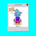

I have prepared a little competition for you all!!
You have to find all the differences in the picture, The 1st picture is the original
and the second one has been changed in some ways!!
Can you find them all???


Click to enlarge the pictures for a better view
The 1st to comment ALL the differences together will win 5000 bugs and a J2K shirt :))
Good luck!!
UPDATE - Guys!!!! Put your answers together into 1 comment please, or it won't
count, some are all over the place!!
P.S. The picture quality isn't a difference, just taken with different things!
WINNER WAS VERRAC!!!
He found all the differences 1st.
Jessie

-2.jpg)


198 comments:
Differences
1. theres is no stereo system in the 2nd pic
2. the furniture thingy is pulled down
3. the postion of red and orange shelf has been changed
4. msg icon is visible in the 2nd pic
5. there is a smiley emoticon in the 2nd pic on the tv or whatever its called XD
6. the door to the 2nd floor is a little open in the 2nd pic
7. there are 4 chairs in the 2nd pic
8. ur pet is standing in a diff place in 2 pic
Thats all :D
http://i48.tinypic.com/2likjtk.png
In the pic above lolz
There is a surprised face in the right side.
Your pet is standing between Robot Configurator And Wardrobe .
The furniture button ( up) is opened.
Audio sistem is changed.
You have a mail.
-lolmimo-
1. the massege sing
2. the room arrow is down
3.stereo buttons and speakers are gone
4.there is a smily face on the screen
5.theres a missing chair
6.the door is open to lvl 2
7.the pet is in a different place
8.the shelf has been chaged around
thats it
~muncchum
2nd Picture Has the stereo turned around
your Not wearing butterfly wings
your pet is in a different place
there is a shocked face on tv
Message icon is flashing
the Furniture icon is pulled down
There is a chair missing
the red and orange shelf are the other way around
the door to 2nd floor is open a bit
There is a surprised face in the right side.
Your pet is standing between Robot Configurator And Wardrobe .
The furniture button ( up) is opened.
Audio sistem is changed.
You have a mail.
Orange shelf changed with red
The door is opening
4 chairs not one
the door is open
your storage is down
the bookshelf swaped place
there are 3 chairs
you have a message
the stereo is gone
your pet moved
you have a smily on your board thing
xD jadenyuki73
Differences:
1. Smiley Face on the screen
2. In the arrow underneath the red sofa or whatever it is the lines are transparent
3. Your pet has moved
4. On the top of the robot configurator, the clogwheel (?) has disappeared
5. Your house edit thing is open
6. The brown speakers have turned around
7. The door revealing the entrance to the 2nd floor has opened
8. The brown bookcase and the red one has switched posistions
9. One of the red chairs have gone missing so now there are only three left.
10. In the 1st picture you dont have a message but in the 2nd one you do.
11. You are wearing butterfly wings in the 1st picture but you aren't wearing them in the 2nd pic.
12. The question mark on the HELP button has gone away in the 2nd picture
CHOBOTS UERNAME: MUTEY
1. there is 3 chairs
2. The red and orange shelf haz swapped round
3. There is an emotion on the tv
4. The pet has moved
5. The door is slightly open
6. The stereo system has been turned round
7. The envelope at the top is visible
8. The furniture thing is pulled down
Mimorulz :D
- The pet has been moves.
- The radio or stereo thingy has been moved backwards.
- The pet moved next to you.
- The furniture editor box at the top has been opened more.
- The portal to the next room is slightly open.
- A smile emoticon has been added to the TV.
- One more red chair has been added.
- And you're wearing red wings on the next picture.
Oh and the cog wheel thing is missing from the robot configurator
mimorulz :D
face that is suprised on tv
speakers backwards
the furniture storage is down
the two wardrobes, orange and red are switched around
your pet is moved to beside you
you have a message
the question mark on the button on right hand side is gone
the bolt on the robot configorator is gone
the door to your second room is slightly open
the bottom right hand chair is gone
the top right hand chair is moved down
the picture is slightly faded (i dont know if this is one it just looked like one
your not wearing butterfly wings
1. pet
2. emote on tv
3. no gear on robot configurator
4. chairs
5.door opened a little in 2nd pic
6. ur not wearing butterfly wings in 2nd pic
7. shelf colours swapped around
8. no question mark in 2nd pic
9. furniture arrow at top open
10. message sign is missing in first pic
11. speaker circles missing in 2nd pic
i think thats all of them
-kukazu
And ur not wearing ur butterfly wings
mimorulz
I forgot 3 things,
- your bugs changed.
- the question mark on help was gone.
- and the mail sign appeared.
1. ur 'place things' are opened/
2. ur pet is in different places
3. the robot configurat's wheel
4. on the TV is a surprised emoticon, but in a pic not
5. ur music stereos are different
6. in the 1st image ur door to the 2nd floor is closed, in the 2nd pic is opened
7. in the 1st image u have no messages and in the 2nd piture u have
8. the wardrobes are changed
9.in the 1st image u have 4 chairs, in the 2nd image u have 3 (and positionated different)
10. in the 1st image u have wings, in the 2nd image u don't
yay 1st comment!
~aqua_bubble~
Oh and the question mark is gone lol sorry for all the comments
mimorulz :D
i thought i was the 1st preson :((
AND THE TINY YELLOW BIT BY THE DOOR IS DIFFERENT!!! LAST COMMENT PROMISE!!
mimorulz :D
1st Pics :-
1- The pet was far from u
2-u turned the music instrument
3-u had a robot pics in the robot confguration
4-u had 3 chairs next to the table
5-u had a surprise face on the chart
6-u didnt had a message
7-The editing button was there.
Hey!
http://i48.tinypic.com/2hzlamw.png
That's all :)
-vklaci
1. stereo turned backwars
2. missing one chair
3. the tv has a :O
4. the bookcases are switched around
5. the pet is in a different position
6. mail
7. there is a gear pic on the robot
8. there is a furniture thing pulled 1/2 way down
9. the door is opened a little to the 2nd floor
10. the ? mark is gone on the ? button
11. You have no butterfly wings on
im phan
-1 a table is missing
-2 in the 2nd pic the message isnt flashing
-3 your pet has mooved places
-4 the places of your book cases has swapped
-5 your furniture holder is down
-6 your speakers have turned round
-7 the cog is missing from the robot configulataore
-8 the '2' portal is open a bit
-9 ther is a surprised emotion on the board
-10 you are wearing wings in the first pic but not in the second
-11 no question mark in the second pic!
XOXO Birdplate XOXO
AD ON! the yellow bit by the 2nd portal is missing!
XOXO birdplate XOXO
http://i49.tinypic.com/2m4c2gw.jpg
Theres my answer above :P
no butrterfly wings the decorate square the orange thing in robots configratur your pet 3 chairs radio door wow smiley face the orange and red things like wardrobe
~fefo111~
1. gate to the next level
2. Number of chaors modified
3. face in the screen
4.sound system rotated
5. place of the bookshelf is changed
6. you and your pet moved
7.toolbar moved down
8. line of sofa is changed
9.you have got a messages
10. there is an arc in the red circle
11. there is an cogwheel on the robot wadrobe
Spot the differance answers.
1:The furniture item bank is pulled down
2: The cog on the robots wardrobe is missing.
3: On the differant one you have mail
4: The tv has a face on it
5: your butterfly wings have gone :O
6: the sound system is blank (or facing the wrong way
7: You pet has moved :)
8:You have moved slightly
9: The door to room 2. is slightly open
10: The shelf or wardrobe thingies have swapped place (or colours)
11: there are 3 chairs instead of 4
12: One of the lines on the sofa is missing ;)
13: (just to be picky) The quality on the bugs is differant ;) Lol
Good luck everyone
-rofroze
1. Green arrow is pulled down.
2. 1 seat is missing around the table.
3. The pet is moved next to Jessie.
4. The question mark is gone.
4. The speakers have are turned around.
5.The 2nd door is opened a bit.
6.There's a surprised face on the blue screen.
7. The red and brown shelves are placed opposite.
8. Jessie has a message flashings.
9. Jessie doesn't have the butterfly wings.
10. The wheel on the robot configuation is missing.
By the way Me24t is really Chrisdogfan1! Chobot name: Chrisdogfan1
Oh and
On the chairs
(the 3 of them in the picture)
One of them the little squiggle has gone.
If you look on the picture with four chairs it is there
Lol sorry
and
the question mark of help button is gone
-rofroze
beat box thing facing backwards
pet has moved
dor a bit open
inventory is open
smiley icon
oh and one chair has been added
Differences:
1.The table in pic 1 have 4 chairs but the 2 have 3 chairs.
2.The stereo at pic 2 isnt a stereo.
3.In Tv at pic 2 is a emoticon.
4.The colors at shelfs has beed changed.
5.The pet is at different place at pic 2.
6.The door for the 2nd floor is a little open at pic 2.
7.The window with the furniture is pulled down at pic 2.
8.The message emoticon is visible at pic 2.
Lol And another
The hole by the door has yellow inside it !
Last comment I hope lol
-rofroze
On the second picture
1.The furniture button is down
2.You have mail
3.The stereo is turned around
4.There is no cog on the robot configurator.
5.There are 3 chairs
6.The entrance to the second room is slightly open.
7.The book cases are swapped
8.There is a surprised icon on the screen.
9.Your pet has moved
10.Your not wearing butterfly wings
11.On the red chair thing there is no line between the 2 bumps
My name on chobots is f1kid
1. theres is no stereo system in the 2nd pic
2. the furniture thingy is pulled down
3. the postion of red and orange shelf has been changed
4. msg icon is visible in the 2nd pic
5. there is a smiley emoticon in the 2nd pic on the tv or whatever its called XD
6. the door to the 2nd floor is a little open in the 2nd pic
7. there are 4 chairs in the 2nd pic
8. ur pet is standing in a diff place in 2 pic
Difference:
1.in the second image you got message(s) and in the first you dont
2.the stereo system is turned and we see it's back in the second pic
3.you aren't wearing butterfly wings in second picture
4.your pet is in a different position in second picture
5.the furniture storage button is pulled down, only till the arrows in second pic
6.there is a surprised emoticon on the blue screen in second pic
7.the door to the 2nd floor is opened in the second pic
8.your chobot is moved a bit downer in the second pic
9.there are only 3 red chairs on the platform, instead of 4, in the second pic
10.the 2 book shelvs changed place in the second picture
Lavadog
1.The ? mark is gone off the help button
2. Your not wearing butterfly wings
3.Dizzy is gone beside you
4.The stereo is turned around
5.The read and orange shelfs are switched
6.The Wheel of the robot configurator is gone
7.The sofa that is beside the shelfs is lighter
8.The surprised smiley on the screen
9.There is another chair
10.The message button is on
11.The furntiure button is down
12.The second room door is open a bit
1) less chairs
2) face on Tv
3) No more wings
4) moved pet
5) you have removed the robot symbol
6) Swapped the shelf
7) Door is opened.
8) Stereo is moved around
9) The furnature button is moved down
10) The mail button is invisible
11) You have moved slightly.
That's them all, I think. Thanks jessie. My chobot name is Yumega ;)
Hope I win
1-The sterio is backwards
2-There is no clog wheel in the robot configurator
3-The furniture page is pulled down
4-The messege icon is visible
5-There is a suprized face in the screen
6-Your pet is in another place
7-The door is little opened
8-There is a missing chair
9-You are not wearing the butterfly wings
10-The (?) is missing
11-the book case's are switched
Thats all
I hope i win
-Complete-
hi jessie its me v_chobot so if you want to see the diffrents i found so they are in http://i45.tinypic.com/2dvpmxd.jpg
hope i win
oh and 9. your not wearing butterfly wings
~munchcum
1.Quality was changed from low to medium
2. Your pet moved.
3. your help button lost it's question mark.
4. your door to the next room is slightly open.
5. the gear on the robots configurator is missing in the secong picture.
6. you have mail in the second picture, where you don't in the first one
7. your "put away furniture" tab is slightly opened in the second picture, where in the first one, its closed all the way.
8. the television has a surprised emotocon on it
9. you only have three chairs around the table in the second picture, where there are four in the first one.
10. your red and orange cabinets switched places
11. your stereo is turned around.
12. In the first picture, you are wearing butterfly wings.
13. the number of petals on the red rosette were reduced from 8 to 7
14. one of the lines on the red couch is missing
~tofulad
I hope i got them all! :D
Heres are some diferences i found :D :
1.The pet
2.The speakers
3.The red chair
4.The items thing
5.The smiley face in the TV
6.The ''?''
7.The Door
8.I think its ur hair :P
kk these are my answers jessie :D
Bye !!!
Sorry Ive put them all together now.
Ok here are the differances.
1:The furniture item bank is pulled down
2: The cog on the robots wardrobe is missing.
3: On the differant one you have mail
4: The tv has a face on it
5: your butterfly wings have gone :O
6: the sound system is blank (or facing the wrong way
7: You pet has moved :)
8:You have moved slightly
9: The door to room 2. is slightly open
10: The shelf or wardrobe thingies have swapped place (or colours)
11: there are 3 chairs instead of 4
and they are in differant postions
12: One of the lines on the sofa is missing ;)
13: (just to be picky) The quality
14: On the chairs
(the 3 of them in the picture)
One of them the little squiggle has gone.
If you look on the picture with four chairs it is there
15: The hole by the door has a yellow bit
16: the help button went
I posted most of these before but I put them into a full comment for you sorry :D
-rofroze
1. Stereo is in a different position
2. Engine Picture in the Robot Configurator
3. House Editor
4. Question Mark Button
5. Emoticon on TV
6. Orange And Red shelf are swapped.
7. Orange and Yellow Sits. (4 in the 1st Pic and only 3 on 2nd Pic)
8. Your Pet
9. The Door to the Second Floor.
10. The Butterfly Wings.
11. Messages Icon. (No messages in 1st Pic. Some Messages in 2nd Pic)
Plz give the Shirt to Beba02
-Omar
Sorry but the hlp buttons question mark has gone
sorry jess
-rofroze
1:red thing lighter and darker
message no message
green arrow and the lighter one
4 chair 3 chair
2 floor in the othere house door open and no open
the othere arrow ligher and darkerr
face on the tv thing
ur pet in diffrent plces
the othee house door darker and lighter
the triangle thing at the top were stuff are
the radio turned aorund
the shelf facing anothere way
the radio facing anothere way
floor color is diffrent
and the radio is lighter
and shelp lighter
ont he robot thing no thing on top
hope i win
http://lh6.ggpht.com/_pf07qzitcqE/SxQSKttbsbI/AAAAAAAAAT4/LT9ay95AO7w/737748.png
Click on the picture above
Here they are again Cause I missed one.
1. Stereo is in a different position
2. Engine Picture in the Robot Configurator
3. House Editor
4. Question Mark Button
5. Emoticon on TV
6. Orange And Red shelf are swapped.
7. Orange and Yellow Sits. (4 in the 1st Pic and only 3 on 2nd Pic)
8. Your Pet
9. The Door to the Second Floor.
10. The Butterfly Wings.
11. Messages Icon. (No messages in 1st Pic. Some Messages in 2nd Pic)
12. Line on the Red Thingy that is besides the Stereo xD
Plz give the Shirt to Beba02 THX!
-Omar
omg how could i forget u im very sorry i forgot that theres no wings on u too
i have 10!stereo,chair,pet,money,smile in tele,in robot correct,open door (2 room),in you home bag,message and the cupboards colors!!
i have 10!stereo,chair,pet,money,smile in tele,in robot correct,open door (2 room),in you home bag,message and the cupboards colors!!
1.the pet is standing in difference places
2.the thing where you have you furniture is pulled out
3.the stero is the other way.
4.the message bar
5.there is a amiley on the tv.
6.there are three chairs in the other pic.
7.the robot wardrobe is missing the thing on the top of it.
8.the door is a bit open in the other pic
9.the thing to the left has difference swith the color side.
10.i dont know if this counts but the pic. down is brighter
1. the message sing
2. the room arrow is open/down
3.stereo buttons and speakers are gone
4.there is a Smily face on the sreen
5.theres a missing chair
6.the door is open to level 2
7.the pet is in a different place
8.the shelf has been change around
Right sorry for this jess
but now ive put em all together.
ok hope this will count x)
Spot the differance answers.
1:The furniture item bank is pulled down
2: The cog on the robots wardrobe is missing.
3: On the differant one you have mail
4: The tv has a face on it
5: your butterfly wings have gone :O
6: the sound system is blank (or facing the wrong way
7: You pet has moved :)
8:You have moved slightly
9: The door to room 2. is slightly open
10: The shelf or wardrobe thingies have swapped place (or colours)
11: there are 3 chairs instead of 4
12: One of the lines on the sofa is missing ;)
13: (just to be picky) The quality
14: On the chairs
(the 3 of them in the picture)
One of them the little squiggle has gone.
If you look on the picture with four chairs it is there
15: The ? Of the help button is gone
and finnally
16: in the hole by the door there is a yellow bit
Sorry Ive posted it like 5 times now this is the last comment (hopefully) Thanks
-rofroze
differences
1.theres is no stereo system in the 2nd pic.has been changed
2.the funiture thingy is pulled down
3.the postion of red and orange shelf hs been changed
4.msg icon is visible in the 2nd pic
.5 there is a surprised emotion in the tv
6.the door to the 2nd floor is a little open in the 2nd pic
7.there is 3 chairs in the 2nd pic
8.ur pet is standing in a diff place in 2nd pic
thx:D ~undertaker3~
1- 1st pic 4 chairs n 2nd pic 3 chairs
2- Ur pet in difference places
3- 1st picture door closed and 2nd picture door open
4- furniture item opened in 1st pic but not 2nd pic
5- jessie is standing a little down on 2nd pic but 1st pic ur a little up
6- 1st pic u have wings 2nd pic u dont have wings!
7- there's a face in the 2nd pic on the TV but not in the 1st pic!
8- the robot configirator there's a sign on it on the 1st pic but not in the 2nd!
9- u have message button appearing on 2nd picture but not in the 1st picture! on the 1st picture it is dissapeared!
10- the Music box on the left is turned back on 2nd picture but on the 1st picture it has shown its front
11- the question mark on the help button is gone in the 2nd picture.. but the 1st picture it has the ? button on it!
12- the bookcase of red and brown has changed positions
13- if u zoom it out and REALLY LOOK the above right white dots .. they r not in same position + look at the TOPPEST RIGHT dot .. the 2 of them arent in same position
14- the red couch's line is missing!
~cotunbol~
1st The furniture menu is a open
2nd Your and the pets location
3rd Robot Cupboard has no logo on
4th One chair less and one chair moved
5th Speakers are turned
6th Smiley on the screen
7th Red and Orange closets have been switched
8th Second floor door is a bit open
9th On shading on the turn near the second floor door
10th Help button has no "?"
11th You have got mail
12th Your not wearing butterfly wings
13th One line is erased on the red sofa
14th The Bottom right chair has a yellow dot missing
Newy posted them all already :/
Anyway i have the exact same thing as newy
the door is open
your storage is down
the bookshelf swaped place
there are 3 chairs
you have a message
the stereo is gone
your pet moved
you have a smily on your board thing
http://img37.imageshack.us/img37/5259/29022184.png
Click on the image above
the thing behinde the couch the thingy with stuff is lil open and the shelfs are changed and ur pet is in difrent place and the messege button is not on orginal and there r only 3 chairs and u dont have wings and the door to 2nd floor is open + u stand in a little bit other place and there is a emote on the tv or what eve the thingy is called so that are the difrences
ok here is official that i say:
the thing behinde the couch the thingy with stuff is lil open and the shelfs are changed and ur pet is in difrent place and the messege button is not on orginal and there r only 3 chairs and u dont have wings and the door to 2nd floor is open + u stand in lil difrente place there is no gear thingy on ur robot wardrobe and the emote XD the help button is changed on one it dosent have the: "?" and on other it has it!
Hi Jessie Here Iz My Spot the Difference Answers They Are On This Blog http://joe900coolio.blogspot.com/
no this is official:
ok here is official that i say:
the thing behinde the couch the thingy with stuff is lil open and the shelfs are changed and ur pet is in difrent place and the messege button is not on orginal and there r only 3 chairs and u dont have wings and the door to 2nd floor is open + u stand in lil difrente place there is no gear thingy on ur robot wardrobe and the emote XD the help button is changed on one it dosent have the: "?" and on other it has it!and the thing by door to 2nd floor is other thene the other one!
1.sterio turned round in the 2nd pic
2. the furniture chooser is pulled down in 2nd pic
3. the postion of red and orange shelf has been changed
4. message icon is there in the 2nd pic
5. there is a smiley emoticon on the screen in the 2nd pic
6. the door to the 2nd floor is open in the 2nd pic
7. a chair is missing in the 2nd pic.
8. ur pet is standing in a different place in 2nd pic
9. the robot configurator doesn't have a picture of a cog on it in the 2nd pic
10. the ? has been blanked out on the help.
11. you are not wearing your butterfly wings in the 2nd pic.
-cleva
Here's all the difference's :
1. Door is closed on first on second the door is opened.
2. The bit by the door is changed color.
3. Line on sofa is gone .
4. The speekers are trurned around.
5. You got a message on second.
6. The "move your thing areund is down on the second.
7. Your pet is moved.
8. You have moved.
9. Seat is moved from the middle.
10. Seat is gone on second.
11. Seat is gone on second.
12. The stripe is gone off the seat.
13. The cupboards are swaped around.
14. There's a smily on the second.
15. You got wings on the first one.
Here's a picture of the differences:
http://chobot-superman524.blogspot.com/2009/11/contest-pics.html
I hope i got all =)
~Superman524~
http://img522.imageshack.us/i/spot2.jpg/
'http://img522.imageshack.us/img522/8867/spot2.jpg
http://img522.imageshack.us/i/spot2.jpg/
Ok i circled the things tyhat were wrong. Im steinash!=) heres the link
http://i50.tinypic.com/b7gvnm.jpg
http://i50.tinypic.com/2a98vt1.jpg
Heyy
1 They have 3 chairs in one pic and 4 chairs in other
2. the pet
3. the 2 door is closed and the other one is opened little
4. The little thing on the robots head is gone in 1 picture
5. the radio stereo system
6. Coins there is 18 and 19 with the like 2000 on them
7. the stuff where you keep your furniture is opened and closed
8. the messages is beeping and the other one isnt
9 the orang and red shelf changed
name in chobots sammiex33
yes 1st u have no wings in
2ns pic u du. u dont have top thing open and in other u du.and u dont have all chars and other u have all. thats some so plz leme win
1 in the original there are four chairs and there only three in the second 2 the bookcases are switched 3 the pet moves in the pictures 4 the stereo is backwards 5 you have a message and have the house thing open in the second one 6 the door to the second room is half open and the little circle next is different colors in the second picture 7 in the second pic you have something in the screen 8 and the big red thing next to the stereo the last lines are combined in the second pic 9 there's a flower on the robot configurator in the first picture and there's not in the second 10 on the help button there's a question mark in the first and not the second my name is WhiteCrick
1. Dizzy moved
2. The furniture thing is down
3. 2nd floor is slightly open
4. 3 chairs instead of 4 in the bottom corner
5. red and orange wardrobes swapped places
6.surprised face on TV screen
7. You have mail in the 2nd picture
8.Stereo faces gone
9.Robot gear off of robot configurator.
~Spalko~
1.the book shelf has been changed 2cd pic
2.the question mark on the left side hand of the button has no question mark 2cd pic.
3.there is a surprised face on the screen on 2cd pic
4.your pet is standing beside you on 2cd pic.
5.the music thing is turned backwards on 2cd pic.
6.the mail thing is glowing on 2cd pic.
7.there are 3 red and orange chairs when there is suppose to be 4 on 2cd pic.
8.the robot icon isn't on the robot closet top om 2cd pic.
9.your not wearing your butterfly wings on 2cd pic.
that's all that me and my sister saw. XD :D ^_^ V_V -_- BD 8^D
bule22 here ill tell u the ansersw
1.theres a emote on the screen and on the first one there isint.
2.u have wings on the first one and the secound one u dont.
3. on the first one u dont have ur mesgiges alreted but on the secound screen it shows it blinking.
4.on the robot repair screen u have a icon on the first one but on the secound one the icon is not there.
5.on the first one the sterio is facing front but on the secound one the sterio is facing backwords.
6.on the secound room door one the secound one its a bit open but on the first it is not open.
7. ur pet is on a differnt agngle on the first one ur pet is differnt on the secound pic.
8. on the first one there are 4 chairs and on the secound one theres only 3 chairs.
9.on the shelifs one is orenge and red on the first pic but on the secound its red and orenge.
10. on the secound one it shoes the furnither button to move it but on the 2 pic it dosent show it.
wow jessie theres loads of things to change but i finished i hope i win.
http://img442.imageshack.us/img442/4176/45560345.png
UPDATED!!
I think that I have got them all:
1.) The cupboards have swapped colour.
2.) The furniture menu is opened differently.
3.)In the second pic, you have got a message.
4.) In the second pic, there are only 3 chairs and the layout of them around the table has changed slightly.
5.) The door to room 2 is open in picture 2.
6.) In the corner near room 2 where there is a yellow and green colour, there is a shadow on the second but not the first.
7.) On the robot configuration in the second pic, the gear has disappeared.
8.) There is a smiley face on the second pic.
9.) Sorry if this isn't right but in picture 2 on the button in-between map and news (backpack)Is a bow missing? I hope that's the right option even lol.
10.) The pet is positioned differently.
11.) The stereo system is facing in a different direction. Is there a bump on the first pic that's different or is that the same?
12.) Jessie has wings in the first pic.
13.) The question mark in the help button has gone.
14.) Omg I think that I just noticed something that no one else has. On the first pic, the pet's mouth hangs lower and kinda off the body. In the second, the mouth is perfectly on it. Hope you understand this one. Was that an accidental difference due to the pets emotions?
15.) One of the curves on the sofa is missing in the second pic.
Sorry but that's all that I could find. Hope you like it.
1.the stereo system is blank
2.your pet has moved place
3.there is a smiley emoticon on the screen
4.your wings have dissapeared
5.1 of the chairs has gone(from around the table)
6.the circlular spiky thing from the robot configurator has gone
7.the top of the screen where furniture is placed has opened
8.the second floor door is a tiny bit opened
9.your message icon is flashing in one of the pics
1.the stereo has rotated
2.the robot thing has no bolt
3.the pet is in a diffrent place
4.jess has no wings
5.on the help sign there is no ?
6.book case colours are diffrent
7.3 chairs
8.2nd floor door is a little open
9.msg icon is there
10.furniture thing is down
11.siprized icon on T.V
12.Jessie has moved just a little
13.One line is erased on the red sofa
14.it is brighter
15.the circle jessie is standing in looks more yellow and green
thanks!
~minglee
number of chairs
furniture dropdown
place pet is standing
jessie's wings
robot configurator symbol
Level 2 door
screen had face in pic. 2
message in pic. 2
speakers facing diff. directions
and idk if this is meant to be different, but theres a shadow in the crevice by level two door in one of the pics.
1. the massege sing
2. the room arrow is down
3.stereo buttons and speakers are gone
4.there is a smily face on the screen
5.theres a missing chair
6.the door is open to lvl 2
7.the pet is in a different place
8.the shelf has been chaged around
-ANDYBAR
sorry i had another look and i realised that
10.the question mark in the little circle has vanished
11.the little thing next to the room 2 door has half the shadow on it but on the secong pic its full
12.the shelves have switched colours or places:)
thnx for reading::))
Differences By Kirby7777
1.There are 4 chairs and the 2nd pic has 3.
2.The Gear on the Robot Configurator has 1 in the 1st pic and the 2nd 1 does not.
3. In the 1st pic you have wings and the 2nd 1 does not have wings.
4.There is no mail in the first pic and the other 1 has mail.
5.in the first pic there are speaker thingies and the other 1 does not.
6.the first pic on the speaker is looking down and the other is looking right.
7.The money is different.
8.in the 1st pic the orange is in the front in the 2nd pic the red is 1st.
9.the furniture thingy is opened in the 2nd pic and the 1st pic is closed.
10. the door to the 2nd room is closed in the 1st pic and the 2nd pic is opened.
11. the pet is in different spots.
12. there is no face in the 1st pic on the TV and the 2nd pic has a face on the TV.
By kirby7777 =D
Hello my name is Valikoss and here are the answers.
1. first the ? is missing from the second pic from the help button.
2. the sound system is turned around(looks to the north)
3.it is missing a line from the sofa.
4. there is a face on the tv.
5. the door to the second floor is slightly open.
6. the gear from the robots configurator is missing.
7. there is a mail.
8. the system which provides the ability to move your furniture is open.
9. the pet is moved.
10. the butterfly wings from your back are not there.
11. the wardrobes have changed colour.
12. a chair is missing.
and here is a link:http://3.bp.blogspot.com/_OM5b56BUE88/SxQu-NNoU_I/AAAAAAAAAsM/5eONpA58kfs/s1600/spot2.jpg
Thank you again! -Valikoss-
Here they are again Cause I missed two.
1. Stereo is in a different position
2. Engine Picture in the Robot Configurator
3. House Editor
4. Question Mark Button
5. Emoticon on TV
6. Orange And Red shelf are swapped.
7. Orange and Yellow Sits. (4 in the 1st Pic and only 3 on 2nd Pic)
8. Your Pet
9. The Door to the Second Floor.
10. The Butterfly Wings.
11. Messages Icon. (No messages in 1st Pic. Some Messages in 2nd Pic)
12. Line on the Red Thingy that is besides the Stereo xD
13. One of the red sits is missing a yellow line.
14. Floor besides the door. (1st Pic is half orange half yellow and on 2nd Pic is completely Orange)
Plz give the Shirt to Beba02 THX!
-Omar
1. the steror is swich sides and the speakers r not there 2.the furniture thig is pulled down in pic 2 3. the red and orange swiched 4. pet standing in diff place. 5. u have firwing in the 1 st pic.6. u have 4 chairs in the 1 st pic . 7. the door to the 2nd room is a litte open in 2nd pic. 8.and there a surpised look on the tv.2nd pic 9. on the help button on the 2nd pic its doesnt have a ? in the 2nd pic were u click help there is no ? sign. nikitathakor39
Here's a Pic with the Differences so you can understand it better:
http://tinypic.com/r/bhys7p/6
Remember to give the shirt to
Beba02 THX!!
-Omar
you dont have butterfly wings,theres no awirly chair,your pet i in a different place,thers a question face on the billborad,you dont have mail,your house item list is visable,your stereo and tv things are baackwards and facing the otehr way,the second floor door is open,the robot machine doesnt have a symbol on it,you swtiched the colors of the cabinets,and that is it!!!
:D
ill have a link in a min
1. it has messages
2. pet moved place
3. 1 of the red chairs is missing
4. stereo is turned backwards
5. the green thing is pulled down for furnitures
6.red and orange shelf changed places
7. tv has smiley emotion
8.in the configurator one is missing the wheel thing
9.in red couch one of the lines are missing
10. you arent wearing wings in one of the pics
11.near the tv the 1 of them has question mark other one doesnt
12. in one of the pics door to second room is half open
oh and the butterfly wings are missing in the first one :) names WhiteCrick
1.There is no sterreo controls
2.The furniture button is pulled down
3. The gear on robot configurator is gone
4.message icon is gone! O:
5.There is shocked face on your tv. Turn the channel!!!!!!
6.The door to second floor is only tiny bit open
7. you are wearing butterfly wings
8.there are four chairs in 2nd pic and 3 in 1st
9.your pet in different place
10.The shelves are switched around
11.There arent enough lines on the couch on 2nd pic
12.The ? is gone in top right corner.
I hope i win im hiimcool thanks jessie you rock!!!!!!!!!!!!!!!!!!
1. pet in wrong place
2. surprised face on the screen
3. you have no wings
4. furniture icon pulled down
5. red and orange shelf position wrong
6. stereo system backwards
7. robot configuration doesn't have gear
8. there are 4 chairs
9. door to 2nd pic tiny bit open
10. message icon visible
Thats all! marymoocow
there is a smiley face on the t.v
the red questionmark button is missing the question mark in the 2cnd pic.
the pet is moved
the sterio is diffrent
you have mail on the 2cnd pic.
the wheel on the robot configurator is missing in the 2cnd pic.
the entrence to room two is open a little.
the shelves are swiched around
your wings are missing in the first pic.
the furniture storage thing is down half way
there are 3 chairs instead of 4
1.the stereo is turned the oppisite way
2.the pet is by the closet
3.the table has only 3 chairs
4.the telivision has a surprised face
5.the furniture, "drop down button" is drop down a little
6.the second floor door is kind of open
7.the book shelf thing by the table is switched
8.the first one does not have mail the next one(#2) has mail
9.the first picture's chairs forms a square the other forms a triangle
10.the help question mark is missing
11.the oxygon shape thing in the robot closet on top is missing
12.jessie does not have the fire wings
13.
alright here i go:
1. there is 3 chairs instead of
four
2. The robot thingy is missing the picture on top
3. the cupboards have swiched
4. the 2 door is slightly open
5. your pet moved
6. the furniture holder is out
7. theres no mail
8. theres a :O face in the screen
9. the radio up the top has changed
I think thats all!! Good luck to the winner!
i would really LOVE A JK2 T-SHIRT!
`ebtama
ebtamasblog.tk
i got 3 more!
1. pet in wrong place
2. surprised face on the screen
3. you have no wings
4. furniture icon pulled down
5. red and orange shelf position wrong
6. stereo system backwards
7. robot configuration doesn't have gear
8. there are 4 chairs
9. door to 2nd pic tiny bit open
10. message icon visible
11. help question mark gone
12. sofa one of lines missing
13. on first pic there are 209910bugs and on second pic there is 230019 bugs!
Thats all! marymoocow
now i bet i got all!
1. pet in wrong place
2. surprised face on the screen
3. you have no wings
4. furniture icon pulled down
5. red and orange shelf position wrong
6. stereo system backwards
7. robot configuration doesn't have gear
8. there are 4 chairs
9. door to 2nd pic tiny bit open
10. message icon visible
11. help question mark gone
12. sofa one of lines missing
13. on first pic there are 209910bugs and on second pic there is 230019 bugs!
14. quality
15. you have moved up!
Thats all! marymoocow
ifi win i would liek a j2k shirt
http://tinypic.com/view.php?pic=sbsc8y&s=6 i hope i win also i didnt know where to put the missing chair but i hope that doest effect my win if i win!
I FOR GOT ONE WAIT PLZ DONT MAKR MINE WITHOUT THIS U MOVED UP ABIT PLZ PUT THIS IN
also jess u have alot of money wow!
1. there is only 3 stools round the table and the other has 4.
2.the speakers are turned around on the second picture.
3.on second one on the screen there is a face and on the first one there is nothing.
4.the pet is in a differnt place.
5.the book cases have been swaped around.
6.on the second one the door to the other part of your house is open a bit.
7.the furnuture box is pulled down on the second one.
8.there is a message on second one.
Differences:
Your pet's in a diff. spot
The screen in the right has a face
4 stools around the red table
The stereo is backwards
The red and orange bookcases are switched
In the 2nd pic, the 2nd floor door is open
Furniture thing is out
You're not wearing the wings
You have a diff. amount of bugs.
You moved
No gear on robot configurator
No question mark for help
Message thing visible
`samsung12
Ok here we go!
Here are the many changes from 1st pic to 2nd:
First of the picture kind of moved and are different sizes but I'm not sure if that is a change.
1.The stereo has been moved/fliped.
2.Your pet has been moved.
3.Your player (Jessie2000) has been moved.
4.Your wings are gone.
5.The gear on the robot closet is gone.
6.The door to the 2nd room is open a little bit.
7.You got mail! lol
8.You have opened your furniture inventory thing half way.
9.The light part by the door is now shaded in.
10.One of the lines on the red bar thing has become reddish
11.There is a shocked emote on the blue tv thing.
12.The shelves on the right have switched around.
13.The question mark on the help button is gone.
14.The 2 chairs closest to the top have moved to the center and become one.
15.One of the yellow lines on the bottom chair has been erased.
1.Your Butterfly Wings Are Missing
2.The Pic. Of an Orange Gear on the Robot Generator Is Missing
3.Red Chairs (1 Is Missing)
4.The Orange Boom Box Is Rotated
5.The Door Of Room 2 Is Slightly Opened
6. Your Pet Has Moved
7.You Have a Message
8. Theres a Smiley On The TV
9.Your Furniture Storage Is Opened
10.The Orange And Red Shelfs Have Switched
Places
11.Look Closer. I noticed that Your Chobot Moved in Pic. 2.
12.A Yellow Spot On The Red Chair (South East) Is Missing a Yellow Spot
13.That Red 'Seat' Is Missing a Line, To The Left. If You Don't Know What 'Red Thing' I'm Talking About, Its The Piece Of Red Furniture. (North-West)
-- Nathaniel9909
1. theres is no stereo system in the 2nd pic
2. the furniture thingy is pulled down
3. the posotion of red and orange shelf has been changed
4. massage icon is visible in the 2nd pic
5. there is a smiley emoticon in the 2nd pic on the tv or whatever its called
6. the door to the 2nd floor is a little open in the 2nd pic
7. there are 4 chairs in the 2nd pic
8. your pet is standing in a diff place in 2 pic
1. theres is no stereo system in the 2nd pic
2. the furniture thingy is pulled down
3. the posotion of red and orange shelf has been changed
4. massage icon is visible in the 2nd pic
5. there is a smiley emoticon in the 2nd pic on the tv or whatever its called
6. the door to the 2nd floor is a little open in the 2nd pic
7. there are 4 chairs in the 2nd pic
8. your pet is standing in a diff place in 2 pic
If you need some visualization here are some pictures of the 15 changes.
Before:
http://loodydoby.com/loodydobypics/jessie2000changes1.jpg
After:
http://loodydoby.com/loodydobypics/jessie2000changes2.jpg
The pet has moved. The shocked face is on the tv. There are 4 chairs instead of one. The glowing orange messege box is there. The speaker system is flipped around. The the orange shelf moved left and the red shelf moved right. The mechanical circle on the robot configure is gone. The thing where you get your house stuff from is open. The door to the 2nd floor is i little bit open. Your butterfly wings are not there. And thats about it!
1 your pet location
2 the tv has a smiley emoticon
3 the place where your furniture go is open
4 you have mail in one and not in the other
5 near the red couch the oranfge thing doesnt have design
6 you have wings on in the first not second
7 the number of chairs around the table
8 the orange wheel on the robot configurator
9 the door to the second floor is a little open in the snd picture
10 the greenish circle thing to go back where you came from is different colors
11 the amount of money s different
12 The menu box in the top right is different
13 the 2 shelves are switched colors
~eddiemo12
1 your pet location
2 the tv has a smiley emoticon
3 the place where your furniture go is open
4 you have mail in one and not in the other
5 near the red couch the oranfge thing doesnt have design
6 you have wings on in the first not second
7 the number of chairs around the table
8 the orange wheel on the robot configurator
9 the door to the second floor is a little open in the snd picture
10 the greenish circle thing to go back where you came from is different colors
11 the amount of money s different
12 The menu box in the top right is different
13 the 2 shelves are switched colors
14 the question mark is not there
~eddiemo12
here is my guess.
1. surprised face on the screen.
2. the green arrow is changed into the other thing.
3. the music stereo is turned around.
4. the red and orange wardrobes r switched.
5. dizzy is in a different place.
6. You have no butterfly wings.
7.the door to the second floor is opening.
8. the robot configurator is missing the wheel thing on it.
9. you have 4 chairs in 1 pic and 3 in the other.
10. the question mark thing on the orange pad is missing. it is next to the menu sign.
11. the room seems to be lighter. hope i win.
1 your pet location
2 the tv has a smiley emoticon
3 the place where your furniture go is open
4 you have mail in one and not in the other
5 near the red couch the oranfge thing doesnt have design
6 you have wings on in the first not second
7 the number of chairs around the table
8 the orange wheel on the robot configurator
9 the door to the second floor is a little open in the snd picture
10 the greenish circle thing to go back where you came from is different colors
11 the amount of money s different
12 The menu box in the top right is different
13 the 2 shelves are switched colors
14 the question mark is not there
15 the color shower has a black mark going down the arrow
16 th color of your chobot is a little different
~eddiemo12
now i bet i got all!
1. pet in wrong place
2. surprised face on the screen
3. you have no wings
4. furniture icon pulled down
5. red and orange shelf position wrong
6. stereo system backwards
7. robot configuration doesn't have gear
8. there are 4 chairs
9. door to 2nd pic tiny bit open
10. message icon visible
11. help question mark gone
12. sofa one of lines missing
13. on first pic there are 209910bugs and on second pic there is 230019 bugs!
14. quality
15. you have moved up!
16. bottom chair lost a yellow part
Thats all! marymoocow
I circled everything u just have to open this url:
http://i48.tinypic.com/28vu839.jpg
sry if i made it hard for u jess.
i hope i win :)
from: winneris1
1. The stereo system is turned around in the second picture.
2. The door to the 2nd floor is opened a bit in the second picture but in the 1st one its closed.
3. The select your furniture thing is pulled down in the second one not in the first one.
4. Your pet is standing in a different place then it was in the first picture.
5. There is a surprised face on the screen thing in the second picture.
6. There are 3 chairs in the second picture and 4 in the first.
7. You are not wearing butterfly wings in the second picture.
8. Your orange and red closet things and switched.
9. The yellow flower looking thing on the robot closet thing is gone in the second picture.
I hope that is all!
Oh I forgot 1 lol
1. The stereo system is turned around in the second picture.
2. The door to the 2nd floor is opened a bit in the second picture but in the 1st one its closed.
3. The select your furniture thing is pulled down in the second one not in the first one.
4. Your pet is standing in a different place then it was in the first picture.
5. There is a surprised face on the screen thing in the second picture.
6. There are 3 chairs in the second picture and 4 in the first.
7. You are not wearing butterfly wings in the second picture.
8. Your orange and red closet things and switched.
9. The yellow flower looking thing on the robot closet thing is gone in the second picture.
10. YOU HAVE A MESSAGE IN THE SECOND PICTURE!!
1: Three chairs instead of four
2: no robot sign on robot wardrobe
3: The pet is in between the wardrobes
4: The furniture thing is down
5: you have mail
6: The stereo is facing away
7: A surprised face on the T.V thing
8: The red and orange shelfs are switched
9: You are not wearing butterfly wings XD
10: The ? on help is now gone (No more help? =O)
11: One the red couch, there were 10 red things, now theres only 9 :P
12: There's more dark yellow next to the portal door to the 2nd room
13: You're down lower in the other picture (if that counts :P)
And I think that's it :3
AAAAAAND here's a pic :3
http://i47.tinypic.com/2v1q420.png
1.no sterio system near the weird chair
2.the arrow thing pulled out but it is down in second
3.the robot gear is missing!
4.you had mail,now ya dont
5.your pet moved
6.surprised face in the screen!
7.the shelfs switched
8their are four chairs in the 1st but 3 in 2nd!
9.the door is kind of open
thats it!
hermione123~
1. there are 4 chairs in pic #1 but 3 in pic #2.
2. your pet is in a different spot.
3. the colors of the bookshelves have switched colors.
4. no mail in pic #1 mail in pic #2
5. the door is opening in pic #2 but it's closed completely in pic #1
6. there's a :O(shocked) face in the TV in pic #2
7. there's no ? in the hint tab.
8. you don't have winds in pic #2 but in pic #1 u do
9. the stereo was turned around in Pic #2
10. there's a small area by door 2 that's shaded in pic #2 but not in pic #1
11. there's no gear on the robot-thingy in pic #2
1. The Pet is in a diffrent spot
2.On the Robot Configurator there isen't the thing on the top
3. On the Tv it has a Surprised Face
4.On the right the two Bookcases are switched
5.There are 4 seats on the 1st pic and 3 on the other pic
6. The door to the 2nd floor on the 2nd pic is a bit open
7.The Stero is facing back on the 2nds Pic and on 1st pic its facing frontwards
8.On the help menu the ? mark isen't there on the 2nd pic
9.The 2nd shows that you have mail
And I think thats all
P.S.My Chobots name is goofy748
I hope I win :)
Hi open this url:
http://i50.tinypic.com/fmv4ab.jpg
Everything is here just open that url.
I hope i win
By: trops
1. Pet is moved
2. You're missing a table
3. Your shelves are switched
4. You have wings on one picture but not the other
5. The red couch has a little line missing on the second picture.
6. Theres mail in the second picture
7. The drop down box for your furniture is showing
8. The robot machine has the little sprocket thing missing
9. The stereo is backwards
10. Your second floor door is opened a little
11. There is a smiley face on the TV
12. The question mark on the help button is missing
13. THe yellow line on the hole near the second floor is missing
:)
-Shrinkygirl
www.shrinkychick.blogspot.com
OK, here are the differences from the original picture and the picture that you changed:
-Jessie, you are in a different spot
-There are no messages on the original
-On the robot configuration, there isn't a machine symbol in the second pic
-Your pet is between the robot configuration and the wardrobe in the original and in the second your pet is in front of you
-The door to the second level on the first is closed and on the second picture it’s slightly open
-On the original there are four chairs around the floating table and in the second they’re only 3
-Your stereo system is facing forwards in the original picture and in the second it’s turned around not facing forwards.
-In the original you’re wearing wings and in the second picture you’re wearing no wings
-On the screen in the top right corner of the picture on the second picture there is a smiley face that looks like it just saw a ghost
-The two shelving units that are on the side of the page in the middle on the right side are orange and red, in the original picture the orange is first followed by the red and in the second picture they’re swapped
-The place where you keep all of the furniture is open
-On the help button the question mark is gone
That is all of the differences I can find!
~Orangio
Differences are: The stereo in 1st pic was turned around in the second pic.Your pet moved right next to you. The door to 2nd floor in 1st pic is fully closed while the one in 2nd pic is almost opened. Theres a surprised emotion in the screen in the 2nd pic but not in the 1st pic. The closet or shelf was switched in both pics. there are only 3 chairs in the 2nd pic while 4 chairs in 1st pic. You had mail in the second pic while on the 1st you dont. The furntire drop down thingy was down in the 2nd pic while on the 1st one it isnt. And if you look at the bugs the first pic a part is shaded while on the other one it isnt. My name in chobots is z3hn
Differences:1.Your pet is in different spots.
T2.he number 2 door is a little bit open in the second picture
3.The red and orange fake wardrobe thingy's colors are switched around in thr second pic.
4.Your wearing butterfly wings in the first pic.
5.Theres a emotion sign in the tv thing
6.You have mail in the second pic.
7.The furniture holder thing is popping up in the second pic.
8.In the second pic theres only 3 chairs.
9.The stereo system furniture item is switched with another item in the second pic.
Hope i win!
Differences are: The stereo in 1st pic was turned around in the second pic.Your pet moved right next to you. The door to 2nd floor in 1st pic is fully closed while the one in 2nd pic is almost opened. Theres a surprised emotion in the screen in the 2nd pic but not in the 1st pic. The closet or shelf was switched in both pics. there are only 3 chairs in the 2nd pic while 4 chairs in 1st pic. You had mail in the second pic while on the 1st you dont. The furntire drop down thingy was down in the 2nd pic while on the 1st one it isnt. My name in chobots is z3hn
UPDATED~ I noticed that the drawing on the purple configurator is gone in the 1st pic while on the 2nd pic its still there. And the help question mark is gone in the 2nd pic while its there in the 1st one. And u also didnt wear wings on the 2nd one. Lol
1. Pet is in diffrent place
2.Missing red chair
3. theres a face on the tv
4. the thing is down at the top.
5. the mail is here
6. the speakers are turned around
7. the shelfs are switched
8. the door to the 2. floor is opening
9. on the robot thing theres not a tool sign
10. yor not wearing wings
11. the question mark on the help button is gone
~Jamesterr2kewl
1.You have butterfly wings in the first one not in the second pic.
2.Your pet got moved.
3.The stereo got turned around.
4.There are three chairs at the table instead of four.
5.You have mail in the second pic but not in the first.
6.The door for the second floor is a little open in the second pic.
7.There is a surprised emotion con on the tv. in the second pic.
8.The two drawer things next to the sofa. There colors got reversed.
9.The little sign on the robots configuration place is gone in the second pic.
10.Your house already bought stuff catolouge thingy at the top is half way open.
11.The question mark on help is gone in second pic.
12.The re heater thing has a line missing on it
13.The little circle place right by the second door is filled in with one color.
Thats all and wow Jessie that was pretty hard;)
Chobot Name:Entiea
1.NO STEREO
2.FURNITURE THING IS PULLED IN
3.THE SHELFS HAVE BEEN CHANGED 3DIFFERNENT WAYS
4.NO SUPPRISE FACE ON THE TV IN 1ST BUT IN THE SECOND ONE THERE IS
5.U HAVE MAIL
6.3 CHAIRS IN 2ND ONE
7.PET IS STANDING IN DIFFERENT SPOTS
8.THE DOOR FOR THE 2ND PIC IS SLIGHTLY OPEN
Everything newy62 said
Hope i win
-Nicolai
1there is a face in the tv screen
2the stero is turnd around
3you and your pet are in a diffrent spot
4there is a chair added
5the door is opend a little bit
6there is a symble ontop of the robot configuator
7the furniture bar is down
8the tow dressers are in difrent spots
9 no butter fly wings on your back
10 no mail in 1 picture
Differences
1. theres is no stereo system in the 2nd pic
2. the furniture thingy is pulled down
3. the postion of red and orange shelf has been changed
4. msg icon is visible in the 2nd pic
5. there is a smiley emoticon in the 2nd pic on the tv or whatever its called XD
6. the door to the 2nd floor is a little open in the 2nd pic
7. there are 4 chairs in the 2nd pic
8. ur pet is standing in a diff place in 2 pic and no message on the first pic and theres a messagee on 2d pic
and no wings
The pet moved next to Jessie.The emotion in the screen.Jessie's butterfly wings.One of the red chairs is missing.The furniture stuff is pulled down.The gear is missing from the robot machine stuff.The red and tan shelf has been swithched.The stereo has been faced to the back.The door to the 2nd floor has been opened a little bit.Thes a envelope on the screen.
the second picture has a backword stereo, a face on the t.v., the arrow thing has been pulled down, the shelfs are switched, the part on the robot configurator is missing,you dont have the butterfly wings, your pet is in a different place, the thing that goes to floor 2 is opened,it has 4 chairs,and thats all, My name is Agent32256! :D
The pet moved next to Jessie.The emotion in the screen.Jessie's butterfly wings.One of the red chairs is missing.The furniture stuff is pulled down.The gear is missing from the robot machine stuff.The red and tan shelf has been swithched.The stereo has been faced to the back.The door to the 2nd floor has been opened a little bit.Thes a envelope on the screen.
~bazelnut3 (chobot's name is bazelnut3)~
The pet moved next to Jessie.The emotion in the screen.Jessie's butterfly wings.One of the red chairs is missing.The furniture stuff is pulled down.The gear is missing from the robot machine stuff.The red and tan shelf has been swithched.The stereo has been faced to the back.The door to the 2nd floor has been opened a little bit.Thes a envelope on the screen.
~bazelnut3 (chobot's name is bazelnut3)~
Sorry for spam!
~bazelnut3 (chobot name is bazelnut3)~
1.you have a letter
2.speackers
3.robot machine
4.3 chiars instead of 5
5.smilyface
6.no2 door is open a little
7.swaped coulors of the draws
8.top thingy has arrows lolz
9.pet in a diffrent place
1- Youre not wearing your butterfly wings
2- Your pet is standing between the Robot Configurator and the Wardrobe.
3- Theres a :O face on the TV screen.
4- the Furniture tab was open
5- You have mail
6- The help button was red, like it was being clicked on
7- The door to the second room was open
8- Theres only 3 chairs- ones missing.
9- The stereos turned around.
10- The little orange gear on the Robot Configurator is missing.
11- The bookshelves are switched, the red and then the orange.
Thats all i found.
~alexa555
pets moved in the second pic um on the robot thing no cream thing on the top of it the sterio sestem is turned around mail and then no mail there is not 4 red stoles only 3 number 2 door is sliley open a little smiley face on the board thats blue were theres the slide down thing its down to git furnuture and on the first pic its up no ?dot on the red botton i think wings on second pic and not on the first red and crems cabnets by the couch switch on the second pic i looked so hard hope i found it all my chobot name is nokia7788 not nokia its nokia7788 pls rember
hi jessie its elementxtreme here is what i got :D hi jessie its elementxtreme here is what i found that was different :D 1.the stereo thing is facing backwards 2.the 1st pic has more red chairs then the 2nd pic 3.there is a smiley face on the tv 4.your pet moved 5.the robot configurator is missing the orange logo on top of it. 6.the furniture thingy that u get your furniture from is open and if u dont know what im talking about its the thing at the top in the middle. 7.u moved a little on the 1st pic 8.the second floor entrance is open a little 9.the shelves moved a little 10.your chobot mail icon is showing 11.the question mark thing isnt showing 12.ur wearing the wings 13.the thing under the shelves the floor under there is different color like one is lighter color than the other. 14: is that in the 1st pic your big and in the 2nd your small 15:the 1st pic is dark and the 2nd is bright 16:the sofa has a different color in the 1st pic and i think i got them all my chobots name is elementxtreme :D
the shelves are switched, the pet is in a different area, there is not the same amount of bugs, the 2nd level door is open a tiny bit, there is a mail sign in one and not the other, and the radio doesn't have all the details, there isn't all the chairs, the arrow for your furniture is out, the robot thing has no pic at top, Jessie isn't wearing butterfly wings, jessie has two different colors of skin, the arrow doesn't have all the lines, the face on the t.v., there is no question mark on the question button, one pic seems darker than the other, swirly theng by the 2nd floor door has a line, the message thing has a message, and actully your speakers are backwards

Okay the differences are...
1. the stereo is backwards
2. the furniture thing is down, and in the other its just the green arrow
3. the red and orange self are swapped
4. there's a smiley in the screen
5. the to the 2nd floor is open
6.there is 4 chairs, but 3 in one
7. your pet is in a different spot
8. the gear for the robot thing is missing
9. your messages are lit up in one
10. your not wearing butterfly wings in one
11. the question mark is gone in one of the pictures (for the help button)
12. U moved...I think its hard to tell
13. the pictures are called different things!!! (hah i don't think this counts, but IT IS a difference)
one picture is called spot1.jpeg and the other is spot2.jpeg
ALSO! the 2nd picture had less pixels...which is just something my web browser pointed out, but again IT IS A DIFFERENCE! The 2nd picture has 889X496 pixels, and the 1rst picture has 891X497 pixels!
And yea i bet im too late, and i also bet my last 2 differences don't count, but its worth a shot xD
~Gmailchatter
Hey its clubpenguin_fan
Here is the diffeences i got:
1: You and you pet are standing in different places
2: You have wings in the first and not the secont
3: There is a surprized face on the TZ monitor thing
4: You have mail in the secont oe and not the first
5: The furniture storage is pulled down.
6: In the secont picture there is no sprocket thing on the robot wardrobe.
7: The door is slightly opened in one and not the other
8: There is 3 chairs in the seconts and 4 in the first
9: The elp button on the secont pic is missing the question mark
10:For the speaker it is turned aroun in the secont
11: The book shelfs are in different order in the secont pic.
Well I think that all of them
By:
clubpenguin_fan
1) the mail symbol is glowing and visable
2) the furnature container at the top is down
3)the radio thing is backwards
4)the gears symbol on the robots configurator is missing
5) the pet is in a differnt place (next to you)
6) there is a shocked face on the blue screen (at the right)
7)the question mark on the red help button (on the right) is missing
8)the two shelves on the right are switched
9)one chair is missing- before was 4.now there are only 3
10)the second room's entrance is half open (the blue space is showing)
11)the yellow semi-circle (at the second room's entrance) is gone, now it is all orange and not half orange and half yellow.
12) your not wearing those red wings anymore!
grrr accidentally deleted my previous comment =(
I think thats it! =)
-uspinmyhead
Yo 7249 here !
Hey jess if u wanna see answers they will be on my blog
chobots-7249.blogspot.com
ty so much!!
~7249~
Funny_boy
1. Some one has sended you a message
2. You have an emoticon on the tv screen
3. Your pet is sitting some where diffrent
4. One of the pics have a radio and the other has the radio faced backwards
5. On your robot arena repair has a gear picture
6. On your secound floor one of the pic has it opened
7. You dont have butterfly wings
8: the red thing next to the radio is diffrent because one of them you coloured in on something
9: The red and orange wardrobe are mixed around
10: One of the pic has 4 chairs
11: When you place stuff in the room one of ur pic doesnt have it
I hope i win funny_boy
:P :P :P :P
Funny_boy
1. Some one has sended you a message
2. You have an emoticon on the tv screen
3. Your pet is sitting some where diffrent
4. One of the pics have a radio and the other has the radio faced backwards
5. On your robot arena repair has a gear picture
6. On your secound floor one of the pic has it opened
7. You dont have butterfly wings
8: the red thing next to the radio is diffrent because one of them you coloured in on something
9: The red and orange wardrobe are mixed around
10: One of the pic has 4 chairs
11: When you place stuff in the room one of ur pic doesnt have it
12: help sign is gone is a pic
Dont worry about the other message because i relised
I hope i win cause i never win
2nd Pic:
>stereo is switched around and has no speakers or knobs
>you have mail
>the house customize thing is a little down
>there is no gear pic on the configurator
>your pet is not by the wardrobe
>you have no wings
>the 2nd floor door is open bit
>there is 4 seats
>the shelf things are switched
>there is a shocked emotion pic on the TV thing
>there is no question mark on the red button
My username is my B
logger name except with no capitals
1.THE RADIO IS ON BACKWARDS
2.THE BOOK SHELF ARE GOT THE WRONG PLACES
3. THE TV THING HAS A EMOTION ON IT
4.YOUR MONEY HAS A MINUS
5.YOUR PET IS BEHIND YOU
6.THE SECOND FLOOR IS QUITE OPEN
7.THE ONE ON TOP OF YOUR HOME IS GOIN DOWN
8.THE QUESTION MARK IS GONE
9.YOU HAVE MAIL
10.THE CHAIRS IS MISSING ONe CHAIR
11.THERES no GEAR ON THE ROBOT configurator
12.YOUR BUTTERFLY WINGS ARE GONE
Hi Jessie,
I think that all the spots are:
1. The robot configurator gear is missing.
2. the pet is in a different position
3.the level 2 door is slightly open
4. there is a shocked face in the tv thing
5.the red and orange furniture is swapped around
6. your butterfly wings are missing
7. the furniture button is opened
‘8. the stereo furniture is missing the circle speaker things.
9. you have mail in one picture
10. one of your red and yellow swirly chair furniture’s things are missing.
And the pictures are slightly different colour not if that matters I am just checking.
Well I hope I got them all!
Bye Jessie. Have fun reading all the comments. =P
1. your about 2 paces ahead in pic 2 than in 1
2. there are 3 chairs in pic 2 and in pic 1 there is 4
3. in pic 2 you got a mail and in pic 1 you dont have 1
4. in pic 2 there is a smiley face on the screen and in pic there isn't
5. in pic 2 the portal to go to 2nd floor is a little open and in pic 1 it isn't open at all
6. the 2 book cases are switched around
7. in pic 2 the sterio is turned around and it isnt in pic 1
8. your pet is in another place
9. the furniture area is pulled down
10. in the red thing in front sterio and the shelf there is 9 little loops in the 2nd pic and in the first one there is 10
11. in pic 2 the little nut is not on the robot configurator and in pic 1 it is
~jglgs1998
I stared at thios for 10 mins, so lets see how I go!
-----------
1. Shocked face emoticon added on screen
2. Red and orange cupboards swapped places.
3. '?' on help button gone.
4.Cog symbol on robot editor gone.
5. A bar on red seat in front of shelves missing.
6. There is a messege in the messege inbox in the second picture.
7. Jessie and pet moved.
8. Door 2 slightly opened in second picture.
9. Jessie has no wings in the second picture.
10. Room arranger and furniture holder brought down.
11. One of the four tables missing.
12. Top red table moved to the right (of the three tables.)
Thanks, love the new design on the top. Lucky Jess! My site: --
chobotsherald.blogspot.com
Thanks, smirk. :D
Snoopy1212
1.seconds floor the door is kind of open
2.Pet is not the same space
3.There is some mesagges
4.the furniture edit thing is open
5.Smiley face on the blue tv
6.the red chairs has 3.
7.the radio hasnt have those things.
8.the shelfs are diffent colurs
i know im not 1st
-snoopy1212
k 1st.the furniture thingy up has open. 2. there suppose to be four chairs.
3.the gate 2th is open. 4. theres a smiley at the tv.
5.the cabent is red and orange. 6.thers no pet at the top of the wardrome and robot
thingy. 6.the speakers has no thing on inside the speaker
7th. at the robot thingy theres no sign of a thingy.
8th. the msg icon is visable. thats what i can find!-mimo07
who wins
there is no stereo system in the 2and pic
1 pic the table are 4 in the first pic 2 pic there are 3 tables in the 2 pic
Differences:
1. Pet is moved
2. You're missing a table
3. Your shelves are switched
4. You have wings on one picture but not the other
5. The red couch has a little line missing on the second picture.
6. Theres mail in the second picture
7. The drop down box for your furniture is showing
8. The robot machine has the little sprocket thing missing
9. The stereo is backwards
10. Your second floor door is opened a little
11. There is a smiley face on the TV
12. The question mark on the help button is missing
13. THe yellow line on the hole near the second floor is missing
The differences
1. the massege sing
2. the room arrow is down
3.stereo buttons and speakers are gone
4.there is a smily face on the screen
5.theres a missing chair
6.the door is open to lvl 2
7.the pet is in a different place
8.the shelf has been chaged around
~~Rizeiki~~
well done veracc!!
one chair was missing
no steareo
4 chairs in second pic
1 of the furniture was pull down
door slightly open
smilley emoticon on some sort of tv
pet in differnt place
shelfs changed
on the first 1 the item board isnt out and on the second 1 it is there is an emotion on Tv there are 3 seats not 4 the shelves are in a different order the pet is next to u and the speaker is other way around from sergee237
ooh and i forgot u can see the message thing in the second pic
Comments are preserved read-only.